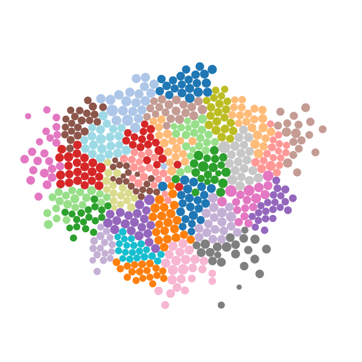
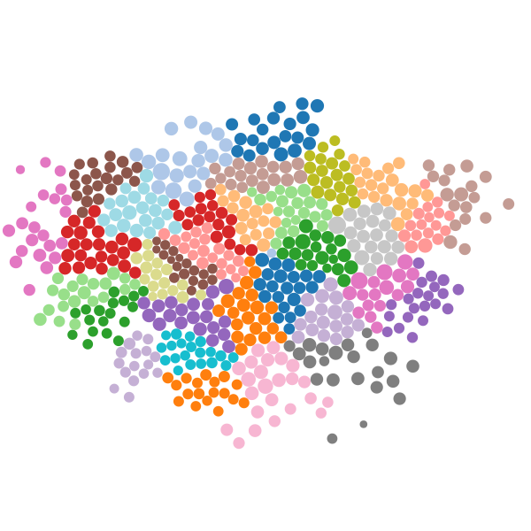
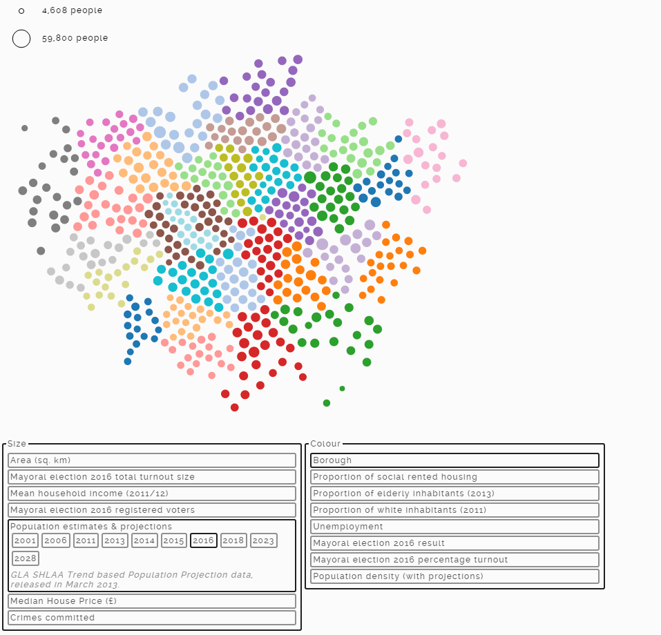

class: center, middle # Coding Cartography ## Effectively Communicating Geospatial Data with Javascript ### alexander-brett.co.uk ??? Hi guys, my name's Alex, and I'm really happy to be here this evening. --- # Motivation ??? The other day I put a graphic up on my website. Ed saw it and thought that... -- - We care about geospatial data ??? ...since we're all here because we care about geospatial data, you might enjoy some of my thoughts about what I made, how, and why. -- - Maps are easy ??? It turns out that drawing maps in the browser is pretty straightforward with help from appropriately-chosen libraries... -- - Good visualisations are also easy ??? ...and that with a some thought we can produce other visualisations that more effectively communicate our geospatial data. ---  [The New York Times election coverage](http://elections.nytimes.com/2010/results/senate) ??? I'm talking about things like this ---  [The Guardian election coverage](http://www.theguardian.com/politics/ng-interactive/2015/may/07/live-uk-election-results-in-full) --- # Content - We're going to draw pictures. ??? The idea is that I will demonstrate some different approaches using using javascript. A warning though: Ed sent us all instructions not to show screens full of code... -- <br/> - We're going to look at code. ??? ... which I'm going to ignore. --- # A quick note to talk about frameworks -- - I like frameworks for getting stuff done quickly -- - d3 and topojson are developed by Mike Bostock -- - they rock -- - sql.js also rocks ??? I'll get back to why this is important later --- # Chloropleth ??? We'll start out with the most straightforward example, a Chloropleth, which is simply a map with regions coloured in according to some metric. I also think the name Chloropleth is wonderful. -- (With thanks to Mike Bostock - https://bl.ocks.org/mbostock/4060606) ??? There is a detailed tutorial for this sort of thing at this link. --- #Get geography ??? Before we can think about putting data in place, we need some basic geography. -- [http://data.london.gov.uk/dataset/statistical-gis-boundary-files-london](http://data.london.gov.uk/dataset/statistical-gis-boundary-files-london) <!-- TRANSFORMING THIS TO A TOPOJSON FILE The boundaries are provided as an ESRI shapefile, which is only of limited usefulness when working with javascript. ``` "C:\Program Files\GDAL\ogr2ogr.exe"\ -f GeoJSON\ -t_srs EPSG:4326\ -lco COORDINATE_PRECISION=7\ wards.json\ London_Ward_CityMerged.shp ``` ``` topojson\ -o wards_simplified.topojson\ --simplify-proportion 0.5\ --properties\ --id-property GSS_CODE\ -- wards.json ``` --> ??? Fortunately, there are some fantastic resources available for us in this regard. All of my London data today comes from data.london.gov.uk - it's brilliant, easy-to-navigate, and there are some really surprisingly detailed and thorough datasets here. I'll show you a couple later. --  ??? For now we'll find the ward boundaries, then download and unzip them. --- #Write Code --- ```html <!DOCTYPE html> <html> <head> <script src="d3.v4.min.js"></script> <script src="topojson.v1.min.js"></script> <link rel="stylesheet" href="style.css"/> </head> <body> <svg id="Uncoloured-Chloropleth" width="500" height="500"></svg> <script> var projection = d3.geoMercator() .scale(28000) .center([-0.09, 51.48]) .translate([250,250]); d3.json("wards_simplified.topojson", function(error, data){ d3.select("#Uncoloured-Chloropleth").append("g") .selectAll("path") .data(topojson.feature(data, data.objects.wards).features) .enter().append("path") .attr("d", d3.geoPath().projection(projection)) .attr("class", "wards-outline"); }); </script> </body> </html> ``` ??? I won't force you to live through every statement in this - if you're interested you should hit up my github - but what I mean to emphasise by this slide is that what I'm about to do isn't vast or intimidating: this tiny snippet of code will produce... --- name: chloropleth-example-outline <svg id="chloropleth-example-outline" width="600" height="600"></svg> ??? ... this result - which I reckon is pretty good going and a powerful endorsement of the power of d3 and topojson for achieving this goal. So far we have successfully drawn the outline of all the wards in London. --- #Make it colourful ??? but it's not very interesting like that. Let's colour each ward according to which borough it's in. It's a neat demo, the data is included in the file we already downloaded, and it only takes... -- ```javascript function boroughColourGenerator(){ var boroughMap = {} , boroughIndex = 0 , boroughPalette = d3.scaleOrdinal(d3.schemeCategory20); return function(datum){ if(boroughMap[datum.properties.BOROUGH] === undefined){ boroughMap[datum.properties.BOROUGH] = boroughIndex++%20; } return boroughPalette(boroughMap[datum.properties.BOROUGH]); } } ``` ??? this much more code to do this: --- name: chloropleth-example-coloured <svg id="chloropleth-example-coloured" width="600" height="600"></svg> --- #Interesting Demographics -- [http://data.london.gov.uk/dataset/ward-profiles-and-atlas](http://data.london.gov.uk/dataset/ward-profiles-and-atlas) --  --- name: chloropleth-example-transition <svg id="chloropleth-example-transition" width="600" height="600"></svg> ??? Of course these things are better when they are animated ###tap So here is london coloured by the proportion of social housing in each ward. Thank you open data! Now it turns out that I am not the world's biggest fan of this particular visualisation. --- #Chloropleths ??? I think that they are -- - Perceptually difficult ??? perceptually difficult, because I think that humans tend to weight things quite a lot by size which means that you easily end up overlooking one of those tiny inner-city wards and disproportionately. that matters particuarly when you're looking at a variable like election results, because the tiny one in the centre will influence the outcome just as much. -- - Representationally inefficient ??? It's extremely difficult to represent more than one variable on a chloropleth, and you may well want to correlate two things together! --- #Hex Grid ??? The second idea, inspired by the Guardian coverage as well as a chat I had last time I was here, was to make a grid of hexagons. Making each ward the same size makes a lot of sense a lot of the time, because wards are designed to have approximately equal populations. This dramatically reduces the perceptual bias of low-density areas. --- class:center name: hexgrid-algorithm <svg id="Hexgrid-algorithm" width="600" height="600"></svg> ??? I ended up with an algorithm which took the wards ordered by how close they were to the centre, and placed them adjacent to a cell which was already there. This prevents too much straggling around the edges, and keeps the relationships between wards more-or-less intact. --- class:center name: hexgrid-transition <svg id="Hexgrid-transition" width="600" height="600"></svg> ??? the result is this - an aesthetically pleasing, but also quite accurate depiction. Of course, we can also make this one pleasantly animated. ###tap So here we have the proportion of social housing on a greyscale, inside the ward. This is one way of showing two different data for each point - it works because we know how much space we have to play with for each hex, wheras with the chloropleth there wouldn't have been enough space in the smallest wards. We can animate the inside and the outside separately ###tap So here is the winning candidate of the mayoral election in each ward, compared to the proportion of social housing in the ward. Does it seem like all of the wards with higher social housing proportions voted Labour? This brings me to a very important point.. --- #Politics -- - Data presentation is a political act -- - ... whether you meant it to be or not --- #Politics - Colour matters ??? For a really obvious example of this, the colours you choose to represent data matter. If I use a scale of black to white, or red to green, am I implicitly applying a normative valuation to the data? Are we either consciously or unconciously using black or red to represent 'bad' and white or green to represent 'good'? And if so, have we examined our decision about what counts as good? For instance, had you found yourself going around colouring in neighbourhoods with high BAME populations red or black, you might find yourself in hot water - and not, I think, entirely unfairly. Also... -- - Size matters ??? Size does matter, for similar reasons. I'll show you why later. -- - What you present matters ??? Lastly, the data you choose to present matters. If you show people a map which has mayoral election results and social housing density, then it's entirely to be expected that they draw an conclusion about your values based on the fact that you showed them that data in that way. --- ##1: Be aware of your biases ??? What I want you to take away from this is that you should be prepared to learn things about yourself as a result of undertaking this sort of endeavour. I thought that I was enjoyably playing around with open data and javascript frameworks, and I ended up producing a way to correlate house prices with crime rates, and BAME population with mayoral election results... -- ##2: Be prepared to respond to criticism ??? ... and this means that every so often someone will read something into what you've done that you didn't intend at all, at which point you might need to adjust a colour scheme, or add a disclaimer. --- #Bubbles --- class:center name: bubbles-animated <svg id="bubbles-animated" width="600" height="600"></svg> ??? The swiss army knife of bubble animations is the d3 force simulation. It iteratively repositions each node according to constraints that you programme in. In this case, we'll specify a collision constraint - which is to say we'll just mandate that the circles cannot overlap. ###tap This works well! But essentially the whole point of this is that we are able to toggle between different data axes to define the radius. So let's now switch the radius to be defined by population instead of land area. ###tap So that worked. Wonderful - and this demonstrates in a way that if the things you care about are principally aligned along population lines, just treating every ward as the same is pretty much ok. I'm still a little dissatisfied with this though, because you can see, especially around the centre, that things got a little bit confused. --- class:center name: bubbles-animated-better <svg id="bubbles-animated-better" width="600" height="600"></svg> ??? In this example, as well as an anti-collision force, there is a force drawing the node representing each ward towards its actual position ###tap this means that they tend to shuffle themselves towards the right place - although it's only a weak force, because it's more important that they don't overlap and that they are pleasingly laid out. --- class:center, middle name: bubbles-animated-comparison   ??? It's not hugely obvious in the moment, but you can see here that it's the kind of tweak that makes things stay a bit organised in the long run. --- class: center #Size matters --- #The Result --- class: center  --- class: center, middle #The End ###alexander-brett.co.uk/2016/06/01/Visualising-London.html ###github.com/alexander-brett/london-geomob-presentation